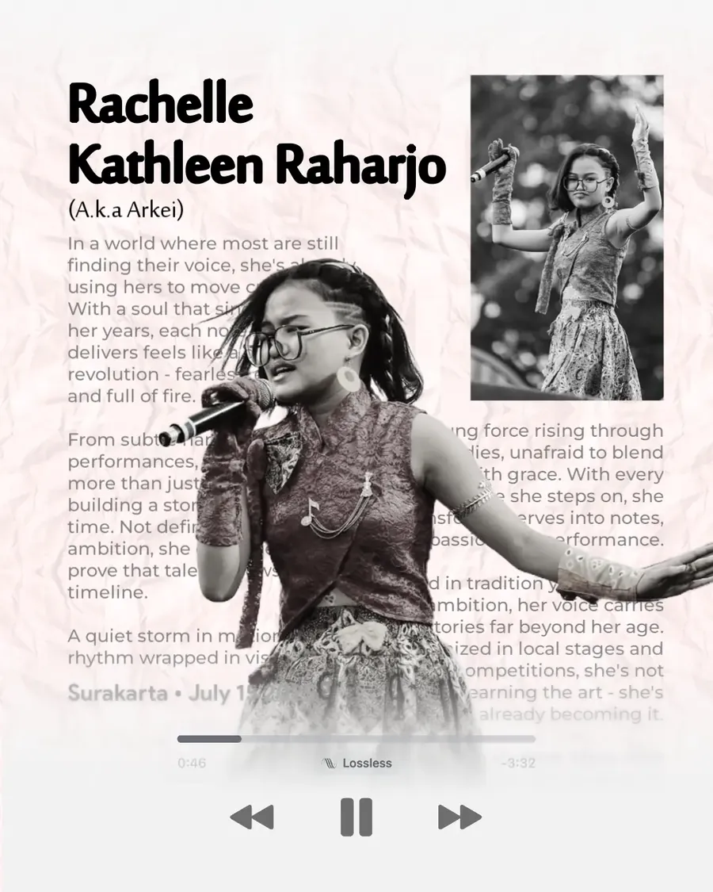
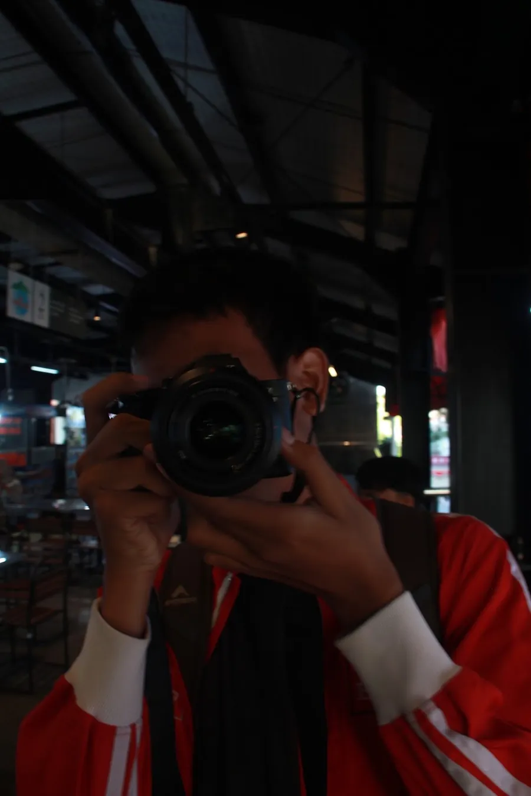
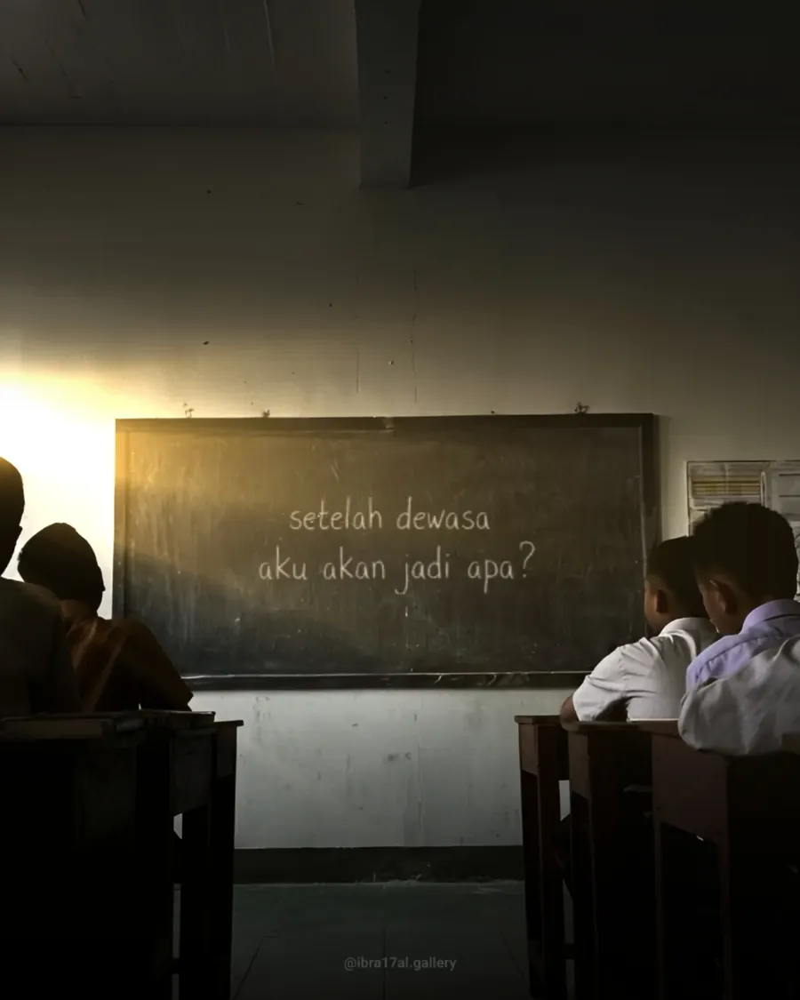

01
Short time di Jogja
Jogja itu sebenarnya kota yang menjaga nama wisatanya dengan baik. Namun kotanya macet, dan jalannya terlalu bercabang, itu pun tetap macet. Tapi ciri khasnya unik.
Ngoding buat senang-senang. Dari Surakarta.
Lihat proyek
Aku suka membongkar software untuk paham cara kerjanya, lalu bikin alternatifnya. Sekarang maintainer Halcyon dan PixelOS untuk ROM Android, dan lagi belajar AI. Aku juga Core Team di Metrolist KMP (bagian Lyrics UI dan Service), kadang membantu bagian MV dan beberapa hal untuk Mac, dan ikut membantu di awal pengerjaan iOS.
Jogja itu sebenarnya kota yang menjaga nama wisatanya dengan baik. Namun kotanya macet, dan jalannya terlalu bercabang, itu pun tetap macet. Tapi ciri khasnya unik.
Mungkin karena aku pengen hal yang bisa memanjakan mataku? Kayak awal aku pakai Apple Music, liriknya cantik banget. Tapi setelah kulihat di versi Windows kok cuma line sync? Dan di web word sync sih, tapi performanya jelek dan liriknya aneh.
Aku suka mengedit foto kalau gabut, atau paling tidak ngefotoin stuff yang unik. Salah satu karya yang paling ramai yang kubuat adalah poster Kathleen di Instagram, dia adik kelasku semasa SMP. Hehe, itu aku bikinnya gabut.
Aku juga suka fotografi, tapi ga terlalu jago karena ga punya kamera. Kadang pinjam. Pakai HP bisa, tapi biar ga oversharpen aku pakai AI.


Di saat orang lain jago membuat kreativitas, dan dengan adanya AI, aku melihat satu hal yang jarang orang lain lihat, yaitu performa dan estetika. Banyak aplikasi dengan estetika cantik namun performa buruk, begitu pun sebaliknya.

Mungkin aku bisa keliling kota, dan lain-lain. Aku tipikal orang yang suka berkenalan dengan orang lain dan mau bersosialisasi. Aku sendiri punya beberapa julukan yang unik, “Yahanu Hengker” lah padahal gabisa hacking, paling parah “Bondet” padahal engga. Istilahnya YTTA yeu.
But there’s some mahfudzot that make me still standing until here.
man jadda wajada.
Ekstensi yang menambahkan lirik per kata dan per suku kata ke YouTube Music dan Apple Music. Ringan, dan sekaligus memperbaiki lirik di Apple Music web.
Kode sumber API di balik YouLy+, ditulis dengan Go. Scraper dan penyedia lirik yang ringan dan berperforma tinggi.
Server pengganti untuk Just Dance Unlimited. Sudah diarsipkan.
Punya ide? Hubungi aja.